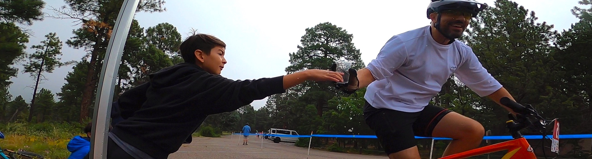

Oakflats MTB is a cross-country race that is part of the New Mexico Off Road Series. The Oakflats MTB race started in 2007 with 7 riders promoted by enthusiastic riders/parents. The race took off in 2010 and by 2011 was one of the top races with more riders and spectators in the State. The race is distinguished for being a well marked course with a separate kids course. The event is family oriented, spectator friendly, with unique hand made trophies, a positive atmosphere and more. Oakflats MTB was shut down for two years, during 2015-16. Now, we are back! and we offer a fast, flowy course with a little bit of everything for everybody.. Join us!
Oakflats MTB presents an opportunity for all riders, spectators and sponsors to have a great day and to enjoy the event. Come with your family and friends and experience a positive atmosphere. Importantly, we offer equal pay/awards for men and women so we will attract a high caliber field.

The vision for a better and bigger event is to keep improving the recipe that has been used since 2010. Come out, have fun, then give us your feedback so we can keep making it better for the racers, spectators and sponsors.